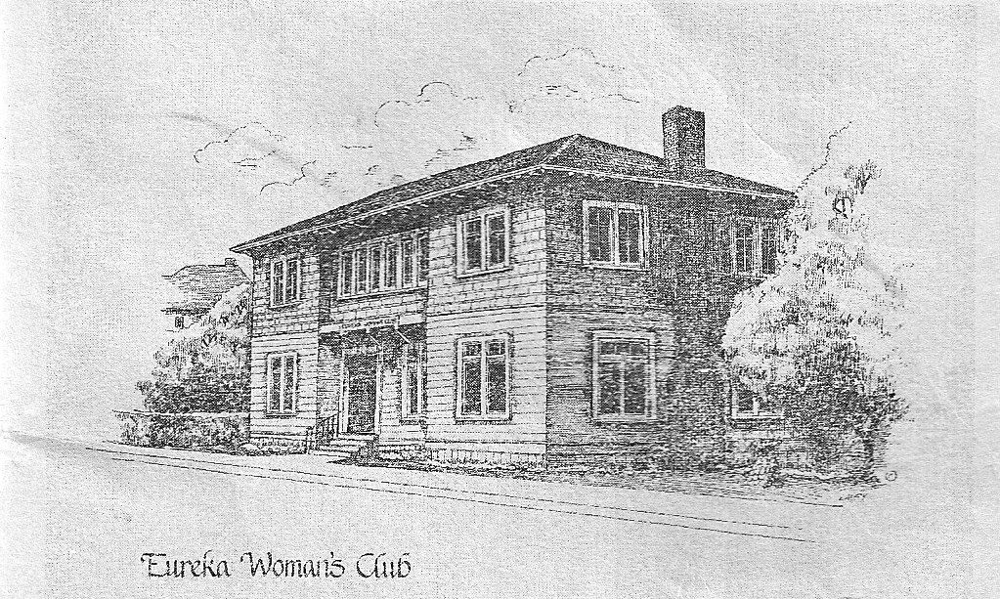

Index Map
The Ocean Health Index uses a framework of 10 broad goals with status, pressures, trend and status. The flower plot visualizes the score of each goal as its extent, and the…
Empowering Communities with Easy-to-Use Digital Tools to Participate in Marine Renewable Energy Planning & Development
This Phase 1 project is active June 2022 to March 2023. We will conduct a series of workshops in California to solicit feedback for building out a prototype tool and apply for Phase 2 funding to build out a commercial application.
| Date | Title | Host | |
|---|---|---|---|
| Sep 21, 2022 | Workshop #1 at SBMM | Santa Barbara Maritime Museum | |
| Sep 29, 2022 | Workshop #2 at RCAA | Redwood Community Action Agency |  |
Here are a few existing applications from other projects that we developed with functionality from which we’ll ask for feedback based on what does and does not work for development of a new application oriented around informing and empowering community voices.
Grace Chang (gchang@integral-corp.com; 831-576-2881)
Ben Best (ben@ecoquants.com; 805-705-9770)